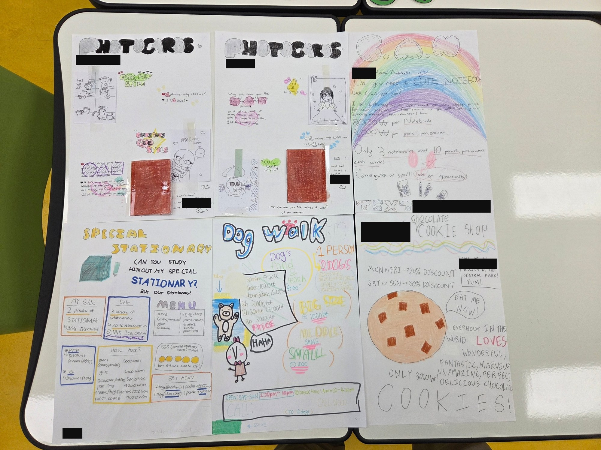

Let's Make Money! A business-math unit
Fourth graders at Dongsung Elementary School designed their own businesses. They worked out revenue, expenses, and profit with real numbers, learned how growth compounds over time, designed an advertisement for their own product, and wrote a pitch for their parents.
I designed the unit's pedagogy and math, taught it, and directed Claude to build the interactive lesson hub from my specifications. Below are the four lessons, a playable version of the lesson hub I used in class, and the work students produced.
- Grade: 4, Dongsung Elementary School, Busan
- Length: four 40-minute lessons
- Math: multiplication with larger numbers, subtraction, percent as "out of 100," discounts, repeated multiplication for growth
- English: persuasion, superlatives, "if ... will" sentences, a spoken pitch
- Format: one interactive lesson hub on the classroom TV, with a Korean support toggle
The four lessons
Each lesson follows the same shape: a retrieval warm-up, a worked example, guided practice, independent practice, a personal task, and an exit ticket. Every lesson has a full lesson plan with objectives, a timeline, formative assessment checks, differentiation, and an exit ticket with answer key.
Business Money
Revenue, expenses, profit, loss, and break-even, using Bryan's glue-stick business. Students calculate each one in vertical format, then test what happens when things go wrong.
Open lesson · Lesson planInvest
Money grows when profit is invested. Students multiply by 1.1 year after year, then compare starting early with starting late. The lesson ends with a plan for their own business idea.
Open lesson · Lesson planMake the Advert
Six persuasion tools and six parts of a good advertisement. Students design an advertisement for their own product, with a price students can find at a glance.
Open lesson · Lesson planMake the Pitch
A six-part pitch to parents with exact numbers: what the business needs, what it will earn, and when it pays back. Scored on a four-level rubric.
Open lesson · Lesson planWhat students produced
These are advertisements Grade 4 students made during the unit, each with a price, a pitch, and a way to contact the seller. Student names and phone numbers are covered.

The math students chose to put in their advertisements
Dog walking
A rate table that rises with time (30 minutes, 1 hour, 1.5 hours, up to 3 hours), plus a size charge: 1,000 won more for a big dog, 1,000 won less for a small one.
Stationery store
A full price list, percent discounts on pack deals, and a VIP loyalty card with its own discount.
Cookie shop
A single price of 3,000 won, with a 20% discount on weekdays and 30% on weekends.
Notebook shop and photocards
Unit prices for different items, a limited weekly stock (3 notebooks and 10 pencils), and a "3+1" sale at 1,000 won per picture, with part of the money donated to children in need.
This is student work, not test scores. The posters show students setting prices, discounts, and offers and putting them in writing. They also show the unit's persuasion language: superlatives, exclamation marks, and a call to action ("Come quick or you'll lose an opportunity!").
How the lessons are built
- Retrieval first. Each lesson opens with questions from the one before, so students recall the earlier math before they use it.
- Worked example, then "your turn." I show a calculation one step at a time. Students try the next one on whiteboards before the answer appears.
- Vertical format with a way in. Multiplication is written vertically. A "?" button breaks a hard product into smaller groups (and shows the zero trick), so students who stall have a next step.
- Fresh numbers every time. The practice pages generate new problems on request, so practice never runs out.
- Immediate, specific feedback. A wrong answer shows a hint about the step, not just "try again."
Being honest about the math
- Compound growth is above Grade 4, so the unit teaches it as repeated multiplication with a calculator, with no formulas.
- The 10% growth rate is a round number chosen to keep the arithmetic easy. A slide says so directly: real investments go up and down, nothing is guaranteed, and children need a parent or guardian to open a real account.
- The profit-margin slide uses rough typical figures and tells students that they change by year, country, and company.
Try it yourself
The lesson hub is the same page I put on the classroom TV. Use the arrow keys to move through the slides, click the numbers to try the practice questions, and press the KR button for the Korean support version. The "Bryan Bucks" counter is the classroom currency students earned for correct answers.
Open the lesson hub Project map
The hub works best on a computer or tablet.
Math background
I hold a Washington DC K-6 teaching license covering all elementary subjects. This unit is my elementary math teaching sample.
Separately, I am working toward a DC secondary mathematics endorsement and preparing for the Praxis exam.